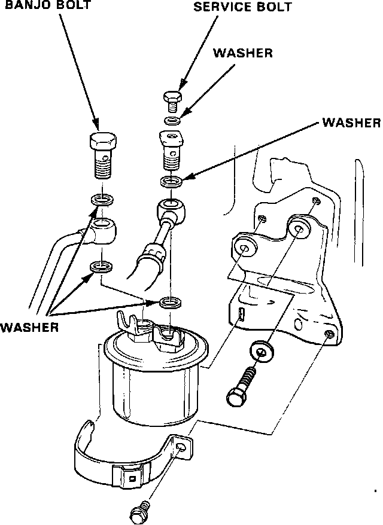

Fuel Filter: Service and Repair
WARNING: DO NOT smoke while working on the fuel system. Keep open flame away from your work area. Make sure the engine is OFF before relieving fuel pressure.1. Place a shop towel under and around the Fuel Filter.
2. Relieve the fuel pressure.
a. Disconnect the negative battery cable.
b. Remove the fuel tank filler cap.
c. Use a box end wrench on the 6mm service bolt at the top of the Fuel Filter, while holding the special banjo bolt with another wrench.
Fuel Filter Typical:

d. Place a rag or shop towel over the 6mm service bolt and SLOWLY loosen the 6mm service bolt one complete turn.
Fuel Filter:

3. Remove the two 12mm banjo bolts from the Fuel Filter.
4. Remove the Fuel Filter clamp and the Fuel Filter.
5. Reverse procedure to install, using new washers as shown in the illustration.
6. Torque the Fuel Filter clamp bolt to:
7 lb-ft (10 Nm).
7. Torque the fuel hose banjo bolts to:
25 lb-ft (34 Nm).
8. Torque the service bolt to:
11 lb-ft (15 Nm).
9. START engine and check for leaks.